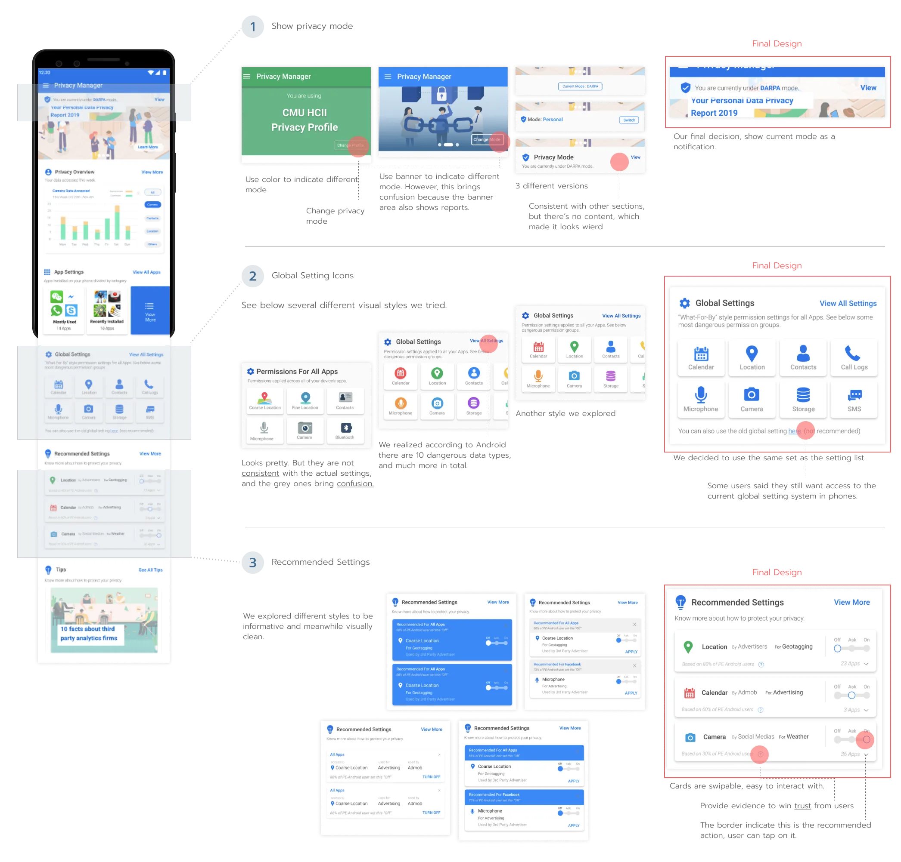
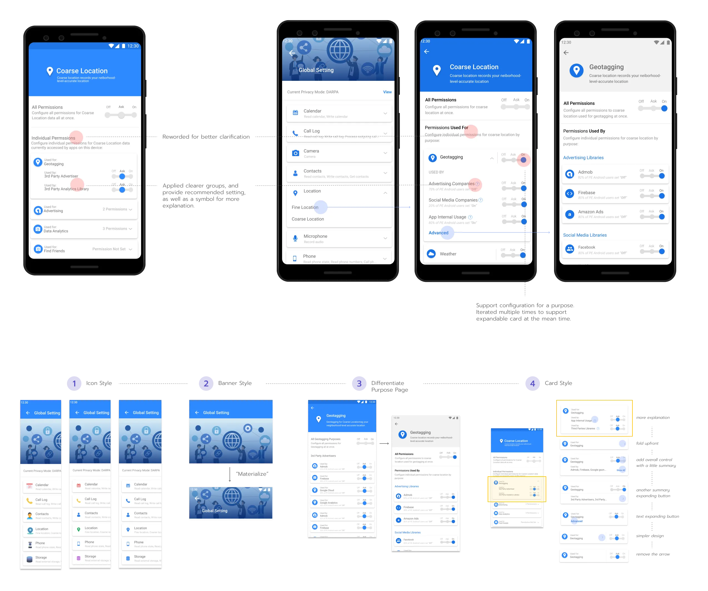
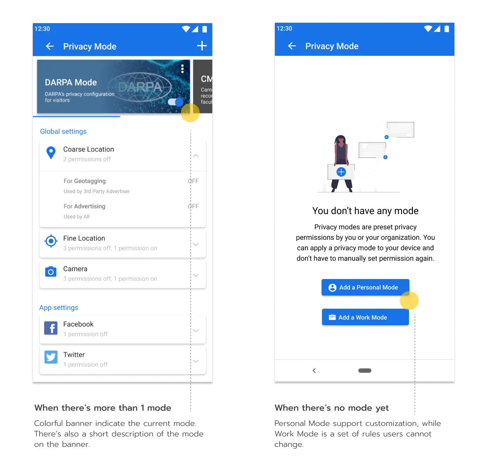
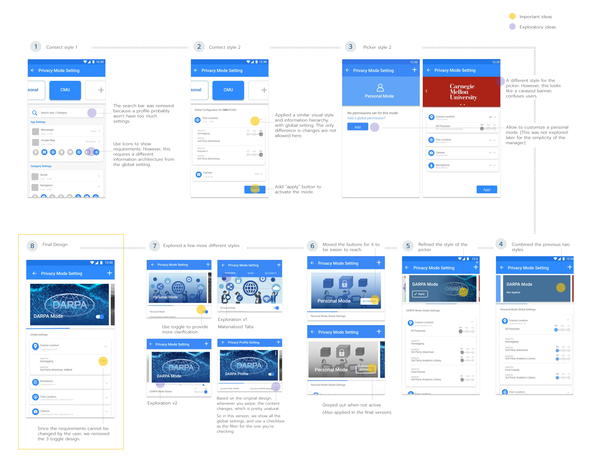
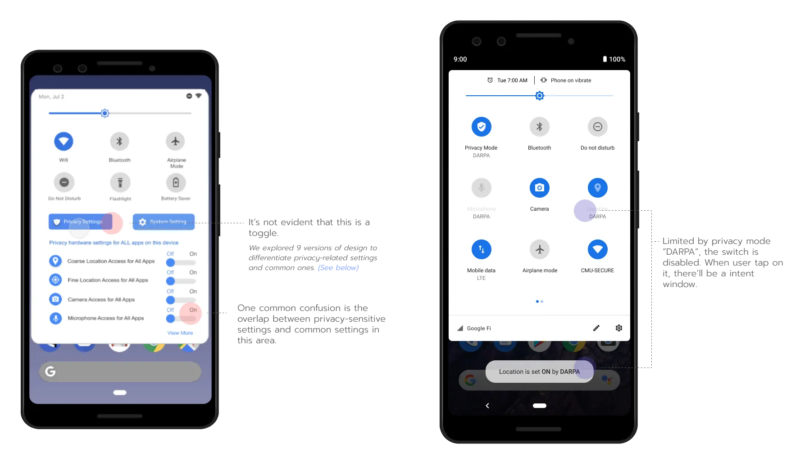
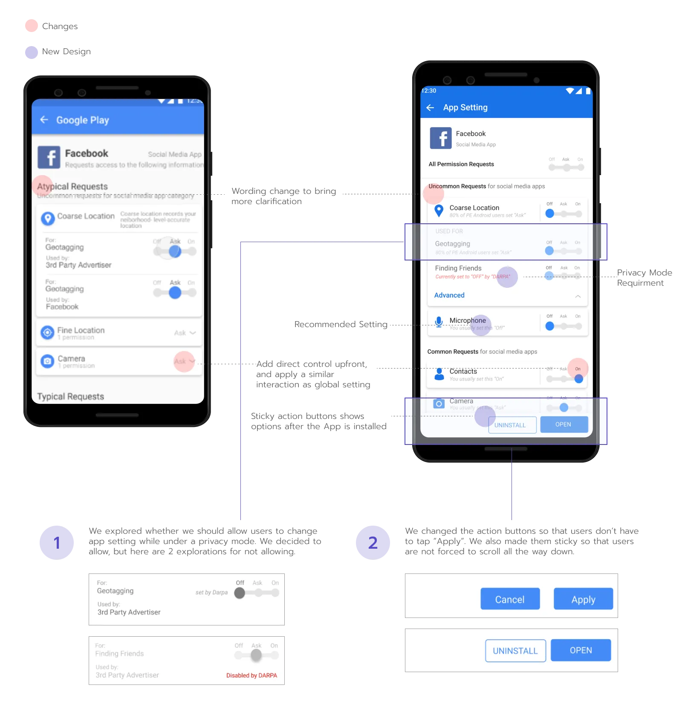
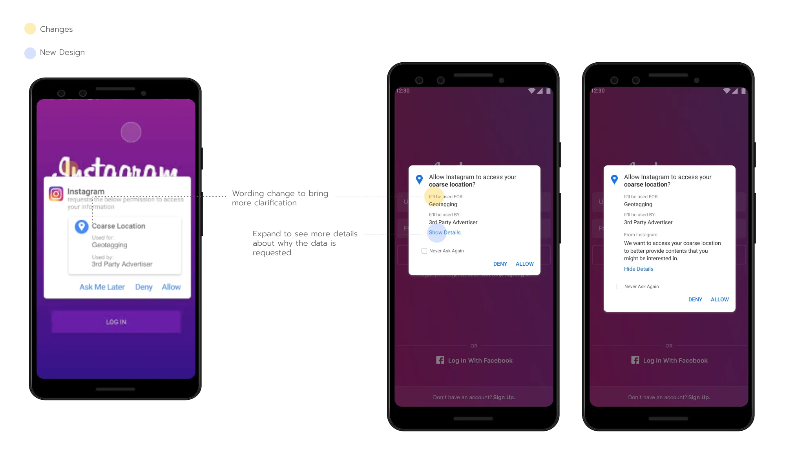
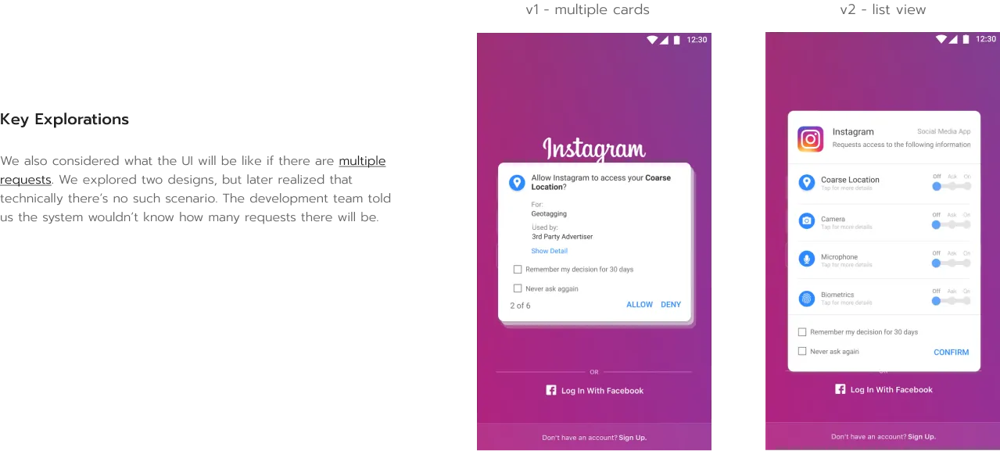
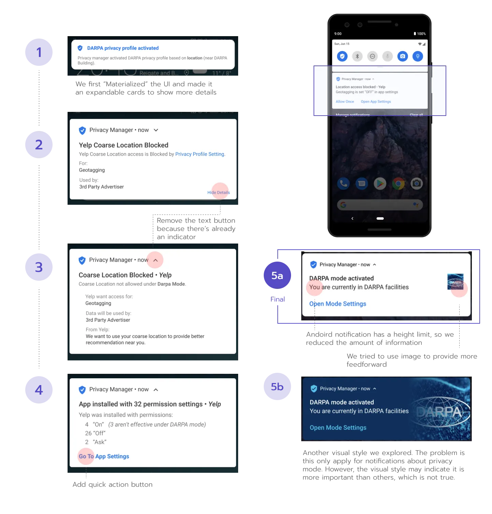

03
Design
Privacy Manager App
1. Homepage
There are a few sections on the homepage:
Privacy Mode: Switch from work mode and life mode.
Privacy Overview: Review how your data is accessed.
Recommended Settings: Quickly improve privacy settings based on other people's settings and
users' previous behavior.
Global Settings & App Settings: Configure for all Apps or individual App.
Key iterations:

2. Global Setting
“Global Setting” means configuring for all Apps. Based on user research, we decided on a “what-why-where” information hierarchy: “what data is
accessed,” “why it is accessed,” and “where is it used.” We also used a progressive disclosure fashion to avoid overwhelming users.
Key iterations

3. Privacy Mode
Privacy mode is to help organizations prevent data leakage from its employees or visitors.
Employees can easily switch to different mode under different
circumstances,and apply the set of configurations. For instance, DARPA’s military people may
need to hide their location from all apps when they are out on a mission.

Key Iterations

Android - Quick Settings
We designed more privacy-related options in the quick setting view, which can help those in sensitive
situations temporarily protect specific data from all Apps.
But it's still under control of the privacy mode, as shown in the demo here.
Key Iterations


Android - App Installation
App Settings
Right after users installed an app, the App Settings page will show up. The default settings are based
on your previous behavior or the majority of our users. We especially designed
an “uncommon requests” section to make the configuration process
more manageable.
Key Iterations

Android OS - Request Access
Request Access
If permission is set to “Ask,” a pop-up will appear when users are using the App. We showed the purpose,
the requester, and a detailed explanation from the App to help
users make decisions more knowledgeably.
Key Iterations


Android - Notification Center
Why I can't use this App?
When a data request was blocked by the OS, the App may not function normally. A notification can help
user identify why it's refused and help user take action easily if needed.
Key Iterations
